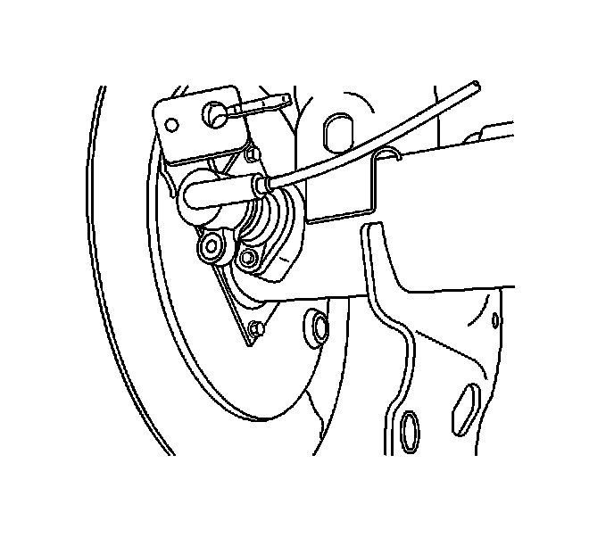

Rear Wheel Speed Sensor Replacement
Rear Wheel Speed Sensor Replacement
Removal Procedure

1. Raise and support the vehicle. Refer to Lifting and Jacking the Vehicle.
2. Disconnect the electrical connector.
3. Remove the wheel speed sensor retaining bolt.
4. Release the wheel speed sensor wiring harness from the retainers.
5. Remove the wheel speed sensor.
Installation Procedure
1. Using a twisting motion, install the wheel speed sensor until fully seated.
Notice: Refer to Fastener Notice.
2. Install the wheel speed sensor retaining bolt.
Tighten the wheel speed sensor retaining bolt to 13 N.m (115 lb in).
3. Connect the electrical connector.
4. Install the wheel speed sensor wiring harness to the retainers.
5. Lower the vehicle.
6. Perform a low speed test to ensure the wheel speed sensor is functioning properly:
1. Start the engine and allow it to idle.
2. Verify the ABS indicator or the traction assist indicator remains illuminated.
3. If the ABS indicator or the traction assist indicator remains illuminated, DO NOT proceed to drive the vehicle until it is diagnosed and repaired. Check the wheel speed sensor electrical connector to ensure it is not damaged and is installed properly. If the lamp remains illuminated, refer to Symptoms - Antilock Brake System.
4. Select a smooth, dry, clean, and level road or large lot that is as free of traffic and obstacles as possible.
5. Drive the vehicle and maintain a speed of at least 16 km/h (10 mph) for at least 5 seconds.
6. Stop the vehicle and check to see if the ABS indicator or the traction assist indicator is illuminated.
7. If an indicator is illuminated, refer to Diagnostic Starting Point - Antilock Brake System.